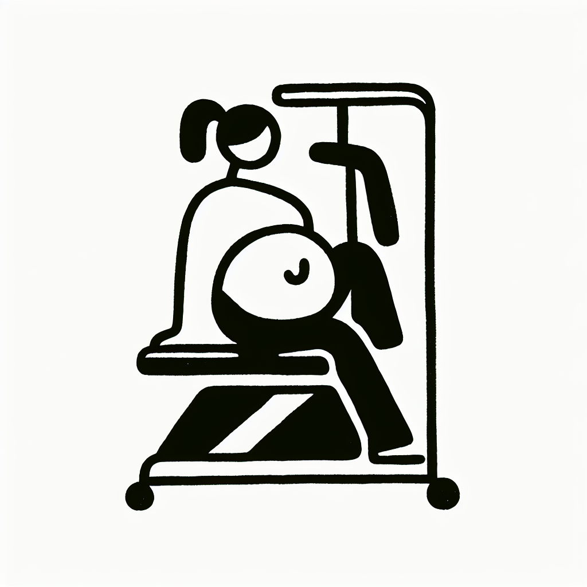

Lagree prénatal : peut-on pratiquer enceinte ?
Lagree prénatal : peut-on pratiquer enceinte ?
La grossesse marque le début d'une aventure extraordinaire, mais pose souvent des questions sur le maintien d'une activité physique adaptée. Parmi les multiples options, la méthode Lagree se distingue, alliant renforcement musculaire et douceur grâce à l'usage de machines MegaPro. Comment conjuguer cette pratique intense avec l'attention particulière requise par une future maman ? Plongeons au cœur de la méthode adaptée aux femmes enceintes.
Le Lagree : un allié sûr pendant la grossesse ?
Connu pour sa technique sans impact, le Lagree repose sur des mouvements contrôlés qui réduisent la pression sur les articulations, une donnée cruciale pour les femmes enceintes. La méthode met l'accent sur la maîtrise du corps et l'équilibre, sous la supervision de coachs formés à adapter les exercices en fonction des changements corporels de la grossesse.
Les bénéfices du Lagree prénatal ne se limitent pas à votre condition physique, ils contribuent aussi à une meilleure gestion du stress, régulent la prise de poids et préparent le corps à l'accouchement.
Quels bénéfices attendre du Lagree prénatal ?
- Amélioration de la posture : L'évolution du centre de gravité pendant la grossesse peut entraîner des douleurs lombaires. Le Lagree aide à renforcer les muscles du dos et à maintenir une posture adéquate.
- Renforcement du plancher pelvien : Essentiel à une récupération post-partum rapide, le plancher pelvien, souvent affaibli pendant la grossesse, bénéficie d'exercices ciblés.
- Endurance et souplesse : Aider le corps à s'adapter aux changements constants et préparer à l'endurance nécessaire pour l'accouchement.
Pratiquer en toute sécurité : conseils essentiels
L'écoute de son corps est primordiale. Chaque trimestre apporte son lot de transformations, et adapter l'intensité de la pratique est essentiel. Chez DOZ, à Anglet, nous proposons des cours supervisés où chaque mouvement est ajusté pour garantir la sécurité et le confort des futures mamans.
- Consultez votre médecin avant de commencer ou de poursuivre une activité sportive pendant la grossesse.
- Restez hydratée et faites des pauses si nécessaire.
- Concentrez-vous sur votre respiration, elle est essentielle pour maintenir un bon équilibre.
DOZ : un cadre idéal pour le Lagree prénatal
Chez DOZ, nous avons conçu un espace de vie hybride qui encourage non seulement l'activité physique mais aussi une alimentation saine. Après une séance de Lagree prénatal, notre Coffee Shop vous offre un lieu de détente, avec ses repas saisonniers et son café de spécialité torréfié avec soin.
Le design minimaliste et chaleureux du lieu, avec ses matériaux bruts, invite à la relaxation et au réconfort, rendant l'expérience DOZ unique.
Pour aller plus loin : rejoignez-nous à Anglet
Alors, prêtes à vivre pleinement votre grossesse tout en cultivant votre bien-être ? N'attendez plus pour réserver votre cours de Lagree prénatal chez DOZ. Venez découvrir ce lieu où effort et réconfort se rencontrent. Notre équipe est impatiente de vous accueillir et de vous accompagner tout au long de cette belle aventure.
Passage incontournable pour toutes celles qui adoptent le style de vie 'Healthy & Surf' de la côte Basque, DOZ est l'endroit idéal pour prendre soin de vous et savourer chaque instant.